-
- 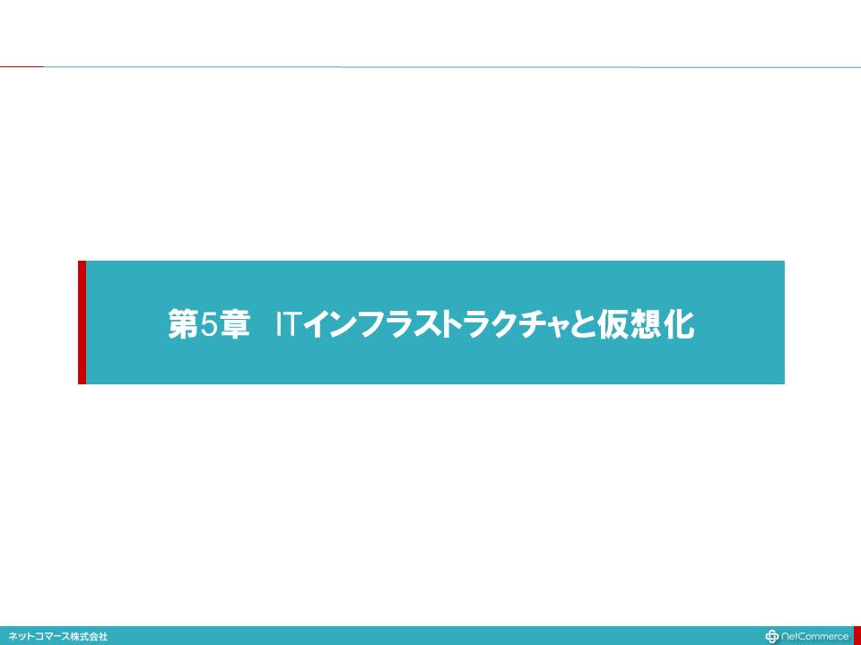
- コレ1枚でわかるITインフラストラクチャと仮想化
- 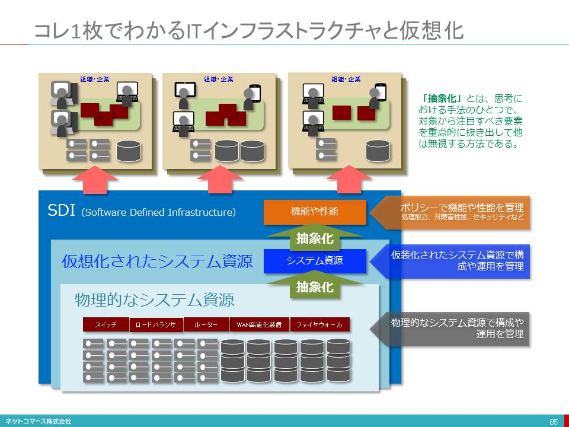
- 「仮想化」の本当の意味
- 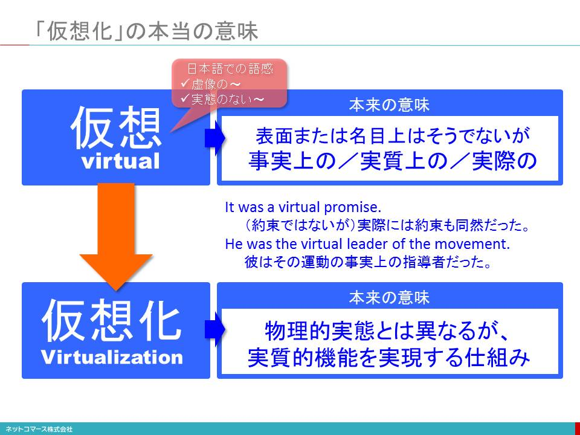
- 日本語の「仮想」という言葉を聞くと、「虚像の」、「実態のない」という意味を思い浮かべてしまいます。ところが、この言葉の元となった英語の「Virtual」は、どうもそういう意味ではないらしいのです。調べてみると、「（表面または名目上はそうでないが）事実上の／実質上の／実際の」という意味があるようです。また、ラテン語の語源を見ると「力のある〜」と記されています。
- 辞書を引くと英語の文例には、次のような記述がありました。
- It was a virtual promise.
- （約束ではないが）実際には約束も同然だった。
- He was the virtual leader of the movement.
- 彼はその運動の事実上の指導者だった。
- He was formally a general, but he was a virtual king of this country．
- 彼は公式には「将軍」ではあったが、彼はこの国の実質的国王だった。
- このように見ていくと、私たちがITの用語として使っている「仮想化＝Virtualization」は、次のような意味と理解するのが、自然かも知れません。
- 「物理的実態とは異なるが実質的機能を実現する仕組み」
- 仮想化は決して、「虚像で実態のないシステムを作り出す仕組み」ではないのです。
- つまり、サーバーやストレージ、ネットワークの物理的な構成や機能、性能とは異なる形態をしているが、実質的には、これと同様の役割を果たす仕組みを実現する技術と考える方が現実に即しています。
- 私たちは、物理的な実態がそこになければ、その存在を認めにくいものです。しかし、考えてみれば、物理的実態にかかわらず、必要な機器構成や機能、性能と同等のものが、実質的に使えるのならば十分です。
 「仮想化」とは、まさに物理的なシステム資源とは異なるが「実質的」には、物理的なシステム資源と同等の扱いができるものを実現し、ユーザーに提供する仕組みなのです。
「仮想化」とは、まさに物理的なシステム資源とは異なるが「実質的」には、物理的なシステム資源と同等の扱いができるものを実現し、ユーザーに提供する仕組みなのです。
- 仮想化の3つのタイプ
- 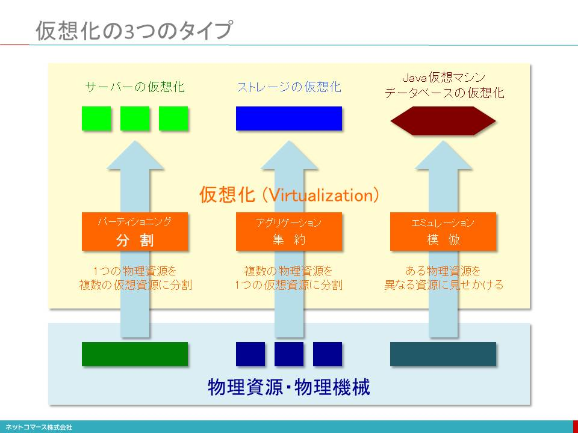
- 【図解】コレ１枚で分かる仮想化の３タイプ
- 仮想化とは、物理的な実態とは異なるものの、あたかもその物理的な実態がそこにあるかのように機能させるソフトウェア技術のことです。
- 仮想化には、次の3つのタイプがあります。
- パーティショニング（分割）
- ひとつのシステム資源を複数の独立した個別の資源として機能させます。例えば1台のサーバーを、10台の個別・独立したサーバーが存在しているかのように機能させる場合などです。
- この方法を使えば、１ユーザーだけでは能力に余裕のある物理サーバー上に、見かけ上複数のサーバーを稼働させ、複数のユーザーが、それぞれを自分専用のサーバーとして扱うことができます。また、システム資源を余らせることなく有効活用することができます。
- アグリゲーション（集約）
- 複数のシステム資源をひとつのシステム資源のように機能させます。例えば、複数の異なるストレージを1つの大きなストレージに見せかける場合などです。この機能を使わなければ、ユーザーは、複数の別々のストレージの存在を意識し、煩雑な操作や設定を行わなければなりません。しかし、この機能により、そんなことは気にすることなく、またメーカーや機種を意識することなく、１つのストレージとして扱えますので、使用上の利便性は大いに高まります。
- エミュレーション（模倣）
- あるシステム資源を異なるシステム資源として機能させます。例えば、PC上で、スマートフォンの基本ソフトウェアが稼働し、スマートフォンに模した画面を表示させることができます。スマートフォンにはない、大きな画面とキーボードで同様の操作ができるようになり、アプリケーション開発やテストの利便性を高めることができます。
- 仮想化というと、「サーバー仮想化」つまり、「パーティショニング（分割）」についてだけ、語られることが少なくありませんが、それだけではありません。ユーザーにとっては、物理的な実態はどうであろうと、必要な機能が実現できればいいわけです。それをソフトウェアの設定だけで実現しようという技術の総称が仮想化というわけです。
- 以前紹介した、「SDI（Software Defined Infrastructure）」もこの技術が土台にあります。つまり、物理的な実態は、インフラを構成するハードウェアの集まりである「リソース・プール」ですが、そこからソフトウェアの設定だけで必要なインフラ機能を取り出し、構築することができる仕組みです。仮想化を分割の仕組みと捉えると本質を見失いかねませんので、注意が必要です。
- ソフトウェア化する世界
- 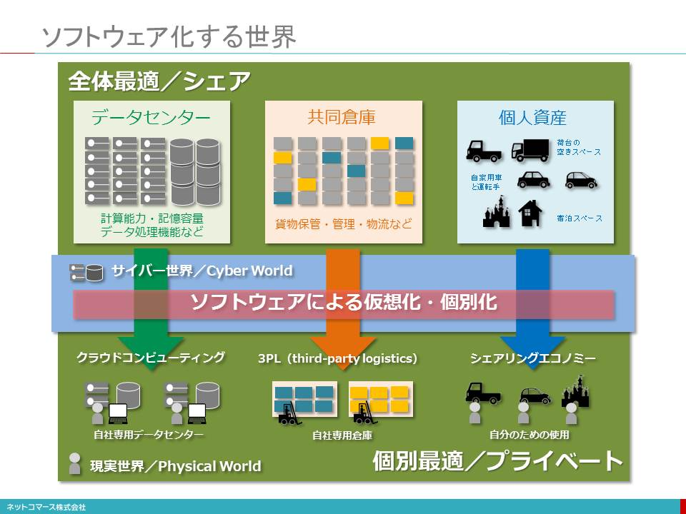
- 【図解】コレ１枚で分かるソフトウェア化する世界
- 私たちはいま、ソフトウェアというフィルターを通して、世界を見ることが増えつつあります。
- 例えば、データセンターに設置されたサーバーやストレージ、ネットワーク機器などの様々なシステム資源は、Hyper-VやKVMなどの仮想化ソフトウェア、OpenStackやVMware vCloud、MesosなどのクラウドOSによって管理され、利用者は物理的な機器類を見ることも意識することもなく、必要なシステムの能力を利用できます。
- このクラウド・コンピューティングという仕組みにより、物理的にはひとつの大きなシステム資源であるにもかかわらず、利用者にとっては個別の専用システムとして扱うことができます。そして、必要な時に必要なだけのシステム資源を即座に調達することができ、手間のかかる運用管理の大部分もソフトウェアに任せることができるようになりました。
- このようなソフトウェアによってハードウェアや設備などの物理的実体を覆い隠し、利用者の利用目的や利用シーンに合わせて、わかりやすく見える化することで、利用者の利便性を高め、作業負担を減らし、しかも柔軟に構成や使い勝手をカスタマイズできる仕組みが、クラウド以外にも私たちの日常や社会に拡がりつつあります。
- 例えば、物流倉庫では、様々なお客様からの荷物を大量に預かっています。それらを予めお客様毎に物理的に区分けした場所に置くとなると、スペースに無駄が生じ、作業効率も低下します。そこで、倉庫として最も効率よく運用できるように荷物を配置し、それらをソフトウェアで管理することで、利用者にとっては、あたかも自分専用の倉庫を使っているように見える化し、運用や管理も利用者にとって、わかりやすいやり方で使ってもらうことができます。
- また、個人が所有する様々な資産、例えば自家用車や自宅の空き部屋、トラックの荷台の空きスペースなどをスマートフォンから登録し、それらをクラウドで共有することで、使いたい人が、使いたいときに依頼すれば、容易に提供できる仕組みも登場しています。これなどもまた、物理的な実体をソフトウェアで管理し、利用者の便宜に応じて提供する仕組みです。
- このような大きな仕組みばかりでなく、テレビや電子レンジ、カメラや時計などの家電製品や日用品も、その実体はハードウェアとソフトウェアの組合せによって実現しています。ハードウェアはソフトウェアによって、その取り扱いの難しさを覆い隠され、使いやすくわかりやすいように見える化され、操作も容易になるように工夫されています。
- このように物理実体が高機能、高性能になり、その扱いが複雑で手間のかかるものになっても、ソフトウェア化されることで、使い勝手や利便性を高めつつ、その価値を最大限に引き出すことができるような仕組みが、拡がりつつあるのです。
- ITインフラと利用形態の歴史的変遷
- 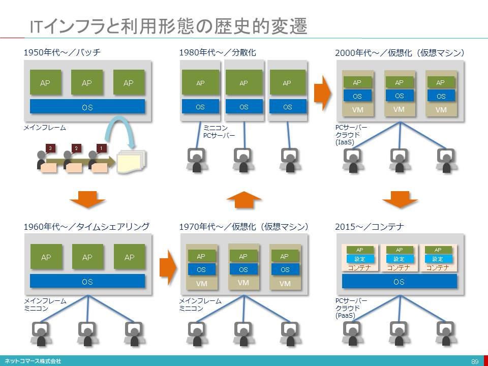
- 1950年代、コンピューターがビジネスで利用されるようになりましたが、非常に高価であり、個人が占有して使うことは不可能でした。そこで大型コンピューター（メインフレーム）を共同利用するために、「バッチ」処理が登場します。バッチは処理目的ごとの「プログラムとデータのひとまとまり（ジョブ）」ごとに順次処理するのですが、前の処理が終わるまで次の処理が始められません。
- 1960年代にはいり、インタラクティブ（対話的）に複数ユーザーが同時に使える「タイムシェアリング（時分割）」が考案されます。これはCPUの処理時間を細かく区切り、その単位でユーザーを切り替えることで、一時点では1ユーザーですが、あたかも同時に複数ユーザーが使えるようになりました。
- 1960年代後半、この時分割された処理単位毎にハードウェア機能の割り当てや設定を切り替えることで、一台のハードウェアで複数のハードウェアが同時に動いているように機能させる「仮想化」が登場、これにより高価な自分専用機を購入しなくても、専用機を占有するような使い方を実現しました。
- 1980年代に入り、PCやミニコン、オフコンといった安価なコンピューターが登場したことで、使用上の制約も多いメインフレームの仮想化ではなく、業務ごとに個別に購入して使おうという動きが生まれました。この分散化により企業が抱えるコンピューター台数は増え、バージョンアップやトラブル対応、運用といった維持管理に関わる手間やコストが膨れあがってゆきます。
- 2000年代に入り、この事態に対処しようと複数のハードウェアを集約できる「仮想化」が再び注目されます。この仮想化されたコンピューターを運用管理とともにインターネット越しに貸し出そうというサービス（IaaS）も登場します。
- ただ、仮想化されたコンピューターは、それ毎にOSや設定のためのデータを個別に持ち動かさなくてはなりません。そのためメモリーやストレージなどの資源を大量消費します。そこで同じOSを使い、ユーザーやアプリケーション毎の個別設定だけを保持し、少ない消費資源で個別のコンピューターのように機能させる「コンテナ」方式が登場しました。コンピューターが様々な業務で使われ、変更に即応できるコンテナは、広く普及の兆しを見せ始めています。
- サーバー仮想化
- 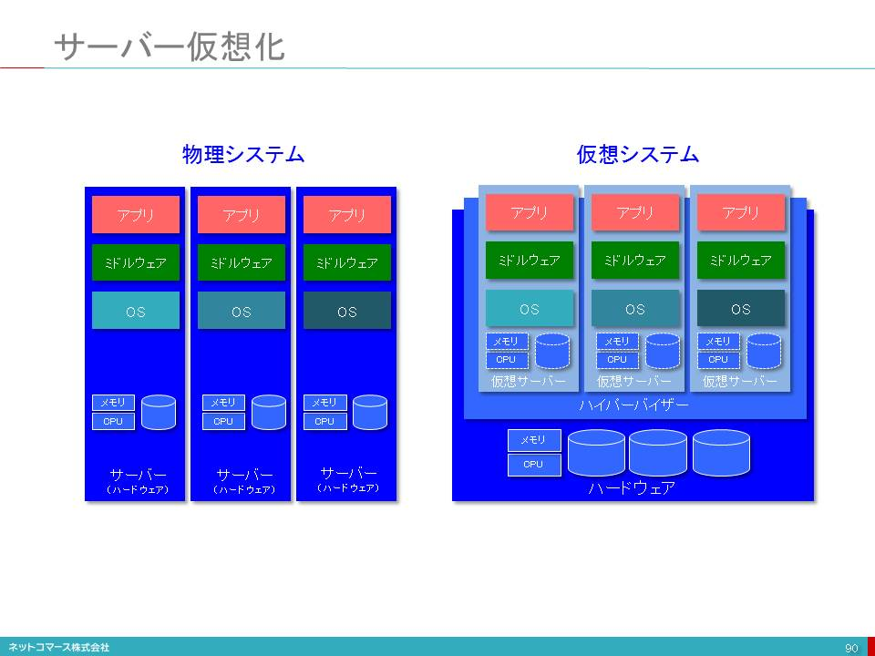
- サーバーとして使われるコンピュータは、プロセッサー、メモリ、ストレージといったハードウェアによって構成されています。
- このハードウェアをオペレーティング・システム（OS）と言われるソフトウェアが制御し、業務を処理するアプリケーションやデータを管理するデータベース、通信制御やユーザー管理を行うシステムなど、様々なプログラムに、ハードウェア資源を適宜割り当て、ユーザーの求める処理を効率よく確実に実行させるように機能します。このOSには、Windows ServerやLinuxなどがあります。
- 「サーバー仮想化」は、このハードウェアに搭載されているプロセッサーやメモリの使用時間やストレージの容量を細かく分割して複数のユーザーに割り当てます。ユーザーは、割り当てられたシステム資源をそれぞれ占有使用することができます。このような仕組みにより、物理的には一台のハードウェアであるにもかかわらず、自分専用の個別のサーバーがユーザー毎に提供されているように見せかけることができるのです。この見かけ上のひとつひとつのサーバーを「仮想サーバー」または、「仮想マシン」と言い、これを実現するソフトウェアは、ハイパーバイザー（Hypervisor）と呼ばれています。VMware vSphereやMicrosoft Hyper-V、Citrix Xen Server、Linuxに組み込まれているKVMといった製品が広く使われています。
- 仮想サーバーは、実際の物理的なサーバーと同様に振る舞い、機能します。ですから、サーバー毎に独立したOSを載せ、個別にアプリケーションを実行させることができます。ユーザーは、まるで専用のハードウェアを与えられたような自由度と利便性を享受しつつ、全体としては、ハードウェアの使用効率を高めることができるのです。
- コンテナ型仮想化
- 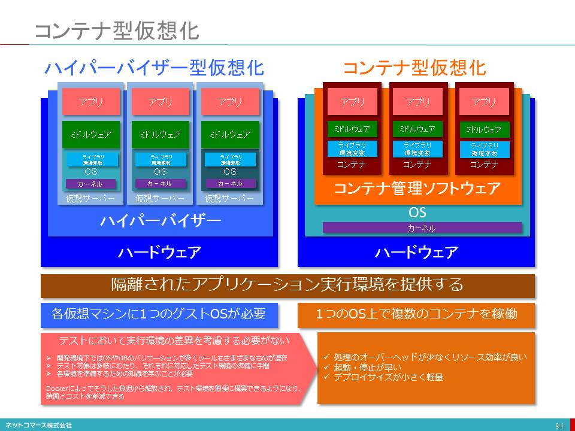
- 「サーバー仮想化」の手段として、広く使われているのが、ハイパーバイザを使った仮想化です。ハイパーバイザとは、仮想化を実現するソフトウェアのことで、ハードウェアに搭載されているプロセッサーやメモリの使用時間やストレージの容量を細かく分割して複数のユーザーに割り当てる機能を持っています。ユーザーは、割り当てられたシステム資源をそれぞれ占有使用することで、物理的には一台のハードウェアであるにもかかわらず、自分専用の個別サーバーが割り当てられているように見せかけることができるのです。この見かけ上のひとつひとつのサーバーを「仮想サーバー」または、「仮想マシン」と言い、それを実現するソフトウェアには、VMwareのESXi、CitrixのXen Server、MicrosoftのHyper-Vなどがあります。
- 「サーバー仮想化」を実現するもうひとつのやり方として、コンテナを使う方法があります。この方法は、ひとつのOSにコンテナと言われる「独立したサーバーと同様の振る舞いをする区画」を複数作り、それを個別のユーザーやサービスに割り当てます。利用するユーザーやサービスから見れば、あたかも独立した個別サーバーのように、別々のサーバーが動いているように見える点は、ハイパーバイザを使う場合と同様です。しかし、同じOS上で実現するので、全てのコンテナは同じOSしか使えません。ハイパーバイザならそれより一段下のレベル、つまりハードウェアのサーバーと同じ振る舞いをする仮想サーバーを実現しますので、仮想サーバー毎に別々のOSを稼働させることができますので、この点は異なります。
- その一方で、コンテナは、ハイパーバイザのように、個別にCPUやメモリ、ストレージなどを割り当てる必要がないためシステム資源のオーバーヘッド（仮想化のために割り当てられる資源や能力）が少なくてすみます。そのため、同じ性能のハードウェアであれば、より多くのコンテナを作ることができます。また、コンテナは、それを起動させるためにハイパーバイザ型のように仮想マシンとOSを起動させる手間がかからないため、極めて高速で起動できます。さらにハイパーバイザのように仮想マシンごとにOSを用意する必要がないのでディスク使用量も少なくて済みます。
- ひとつのコンテナは、OSから見るとひとつのプロセスとみなされます。プロセスとは、プログラムが動いている状態のことです。そのため、他のサーバーにコンテナを移動させて動かすに当たっても、OS上で動くプログラムを移動させるのと同様に、元となるハードウェアの機能や設定に影響を受けることが少なくてすみます。ハイパーバイザでは、元となるハードウェアの機能や構成に依存し、設定情報も引き継がなくてはなりませんが、コンテナは、その必要がなく、マルチ・クラウドやハイブリッド・クラウドのように、異なるクラウドやサーバー間で実行環境を移動させることも容易です。
- このようなコンテナを実現するソフトウェアを「コンテナ管理ソフトウェア」と言います。そのひとつとして、Dockerが注目されています。Dockerとは、Docker社が提供するLinux用のコンテナ管理ソフトウェアです。
- Dockerが注目されるようになったのは、そのコンテナを生成する設定を「Dockerfile」として公開し、それを他のユーザーと共有できる仕組みを設けた点にあります。これによって、他のユーザーが作ったソフトウェアとそれを動かすソフトウェア構築プロセスをそのままに他のサーバーで実行し、同じコンテナを労せずして自分のサーバー上で実現して、ソフトウェアをインストールできるようになったことです。そのためハイブリッド・クラウドやマルチ・クラウドといった利用形態に於いては、大変便利な仕組みです。
- そのため、Dockerは、AWSやGoogleなどのクラウド・サービス・プロバイダーをはじめ、VMware、IBM、Dell、RedHatなどの大手ITベンダーが採用を表明しています。また、Microsoftも自社のクラウド・サービスであるWindows Azure Platformや次期Windows Serverでの採用を表明しており、コンテナ型仮想化として広く普及してゆくものと思われます。
- サーバー仮想化による３つのメリット
- 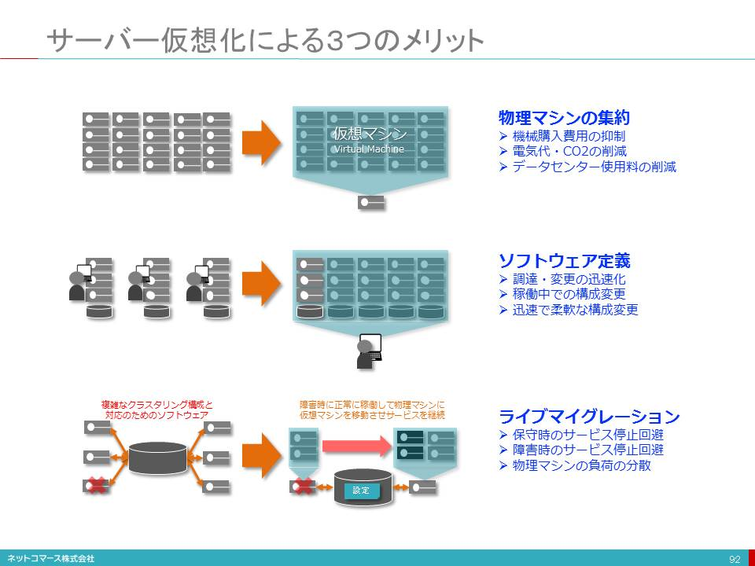
- 【図解】コレ１枚で分かるサーバー仮想化の３つのメリット
- 物理マシンの集約
- 物理マシン、つまり機械の台数を減らせることができます。仮想化されていないサーバーは、その機械が持っている能力最大に使われることはあまりなく、また使用率にばらつきがあるのが一般的です。こういうサーバーを束ねて集約することで、一台の機械の能力を無駄なく使えば、使用率は高まり、機械の台数を減らすことができます。
- 使用率が高く性能が低い旧式機械を使っている場合、その機械の何台分もの能力を持つ新しい機械に集約することで、台数を減らすことができます。
- 使用する機械の台数を減らせば、購入費用の抑制、電気代やCO2の削減、データセンターを借用している場合は、その使用料を削減できます。
- ソフトウェア定義
- 機械の設置や配線とった物理的な作業を伴わずにサーバー機能や性能の調達、構成の変更が実現します。運用管理者は、画面のメニューやコマンドを使って設定するだけです。もちろん仮想サーバーとして使用しようとしている能力の合計が、物理マシンの能力の上限を超えないことが前提ですが、その範囲内であれば、仮想サーバーの調達や複製、構成変更は、設定だけで可能です。
- これにより、仮想サーバーの調達や構成変更が柔軟、迅速に、しかも稼働中にできるようになり、運用管理業務の作業効率を高めることができます。
- ライブマイグレーション
- 仮想サーバーの実体は「設定ファイル」にあります。この設定ファイルにはプロセッサーの能力、メモリーの容量、ネットワークのアドレス番号などの仮想サーバーの設定に関わる情報が書き込まれています。この設定ファイルを、サーバー仮想化を実現するソフトウェア（Microsoft Hyper-VやLinuxのKVMなど）に読み込ませると、物理マシンから必要な機能や性能を取り出し、仮想サーバーを実現してくれます。
- この設定ファイルを２台の物理マシンで共有する構成にしておきます。そして、その物理マシンで稼働する仮想化ソフトウェアがお互いの物理マシンの稼働状況を監視させておくとします。もし一方が障害を起こし停止したら、一方の動いている物理マシンが、その仮想サーバーの設定情報を読み出し、動いている方で仮想サーバーを立ち上げてくれます。これにり利用者は物理マシンの障害の影響を受けることなく、仮想サーバーを利用し続けることができます。
- 障害時ばかりではなく、保守点検で機械を停止させなければならないときなどは、この方法を利用して予め仮想サーバーを別の物理マシンに移動させておき、保守点検が終わったら元に戻すことで、利用者に影響を与えないで物理マシンを停めることができます。
- さらに、ある物理マシンの使用率が高まったとき、能力に余裕のある物理マシン仮想サーバーを移動させれば、全体としての負荷の平準化が実現します。
- このように、仮想サーバーを停めることなく移動させることもサーバーの仮想化によって実現できます。
- 仮想化とクラウド（IaaS）との違い
- 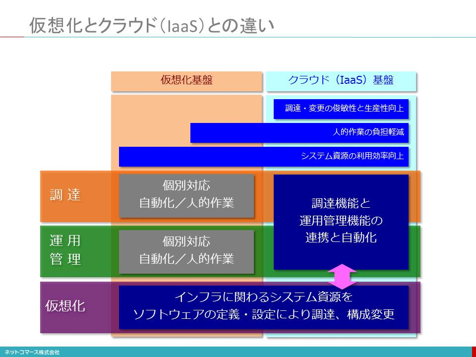
- 【図解】コレ１枚で分かる仮想化とクラウド（IaaS）の違い
- 「仮想化」と「クラウド（IaaS）」は、何が違うのでしょうか。
- 仮想化（Virtualization）は、サーバーやストレージ、ネットワーク機器などのシステム・インフラに関わるシステム資源を、ソフトウェアによる設定や定義によって調達したり、構成を変更したりする技術のことです。例えば、ある一台のハードウェアであるサーバーを、あたかも複数のサーバーが存在し、機能しているように見せかけたり、パラメーターの設定変更で、その機能や構成を変更したりできるようにする仕組みです。
- サーバーを仮想化するソフトウェアとしては、MicrosoftのHyper-V、VMwareのvSphere ESXi、LinuxのKVMなどがあります。また、サーバー以外にも、ストレージやネットワーク機器などを仮想化するための製品があります。
- ただ、ハードウェアを仮想化しても、その起動やシャットダウン、バックアップやリカバリー、 リソースの変更や監視といった運用や管理のための作業は必要です。また、ユーザーが、どのようなシステム構成にするかを選択し、その設定に従って、機能や性能を調達したり、構成変更したりする作業も必要となります。
- IaaSは、仮想化の仕組みを土台に、上記のような運用管理や調達、構成の作業を自動化し、それらを一体として提供するサービスのことです。これは、以前紹介したSDI（Software Defined Infrastructure）の仕組みそのものです。このサービスを特定の企業や組織で占有する場合をプライベート・クラウド、この仕組みを事業者が構築し、複数の企業や組織で共用することを前提に提供するサービスが、パブリック・クラウドです。
- このような運用管理や調達、構成の機能を提供しIaaSを構築するソフトウェアを「クラウドOS」と呼ぶ場合があります。例えば、OpenStackやCloudStackなどのオープンソースとして提供されるものや、MicrosoftのAzure StackやVMware のvCloud Suiteなどの商用ソフトウェア（プロプイエタリ）が、あります。
- ハードウェアへの直接的な操作をユーザーからは隠蔽し、ソフトウェアの設定だけで、ハードウェアの機能を操作し使えるようにするという点で、WindowsやLinuxのようなOSと似ていることから、そのように呼ばれています。
- なお、PaaS（ミドルウェアをサービスとして提供するクラウド・サービス）やSaaS（アプリケーションをサービスとして提供するクラウド・サービス）については、必ずしも仮想化を使わないので、その点は注意が必要です。
- IaaSは、ハードウェアの機能や性能を仮想化して利用するサービスであるため「仮想化」は、前提となります。しかし、PaaSやSaaSからは、ハードウェアは、ユーザーにとっては、見えなくてもいい存在です。つまり、PaaSであれば、データベースや開発・実行環境が、複数の企業や組織（テナント）で共有、利用できればいいわけで、仮想化の技術を必ずしも使う必要はないのです。仮想化は、テナント毎に仮想マシンを構築し、OSを起動させなくてはならず、メモリーやCPUなどのシステム資源の消費量が大きくなってしまいます。そこで、ハードウェアをユーザーに意識させる必要のないPaaSやSaaSでは、もっとシステム資源の消費が少ない方法で、複数のテナントに対応できるよう工夫が凝らされている場合も少なくないのです。
- 仮想化の種類(システム資源の構成要素から考える)
- 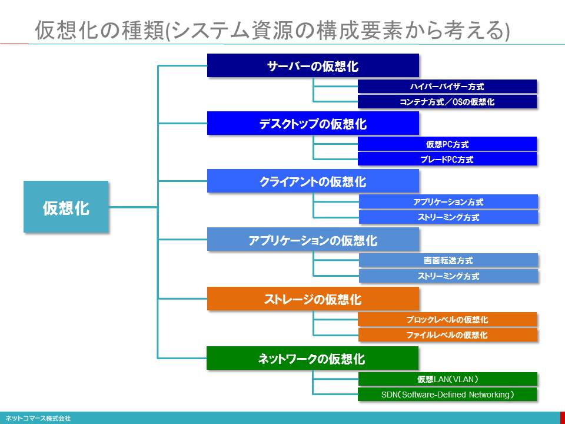
- 「サーバー仮想化」の他にもシステム資源を仮想化する技術があります。
- 「デスクトップ仮想化」では、ユーザーの使用するPCを共用コンピュータであるサーバーの上に「仮想PC」として動かし、そのディスプレイ、キーボード、マウスをネットワーク越しに使えるようにします。ユーザーは手元のPCを操作しながらも、実はサーバー上の仮想PCのプロセッサーやストレージを使っているのです。このためディスプレイ、キーボード、マウスそしてネットワーク接続などの必要最低限の機能に限定したPC「シンクライアント」から使うこともできます。ちなみに「クライアント」とは、「サーバーから提供されるサービスを利用する」コンピュータという意味ですが、ここでは、「一時点でひとりのユーザーが占有して使用するコンピュータ」と理解しておけば良いでしょう。
- 「アプリケーション仮想化」では、MicrosoftのWordやExcelといった、本来ユーザーPC上で稼働するアプリケーション・プログラムをサーバー上で動かし、ネットワークを介して複数のユーザーで共同使用するものです。デスクトップ仮想化と同様にシンクライアントを使うこともできます。
- 「クライアント仮想化」では、一台のPCにWindowsやMac OSといった異なるOSを同時に稼働させます。
- 「ストレージ仮想化」では、ストレージ（記憶装置）といわれるデータやプログラムを格納しておく装置を複数のコンピュータで共用し、利用効率や利便性を高めるものです。
- 「ネットワーク仮想化」では、ネットワークの接続ルートやルーターやスイッチと言われるネットワーク機器の構成をソフトウェアの設定だけで調達、変更できるようにします。
- それでは、それらについて見てゆくことにしましょう。
- デスクトップ仮想化とアプリケーション仮想化
- 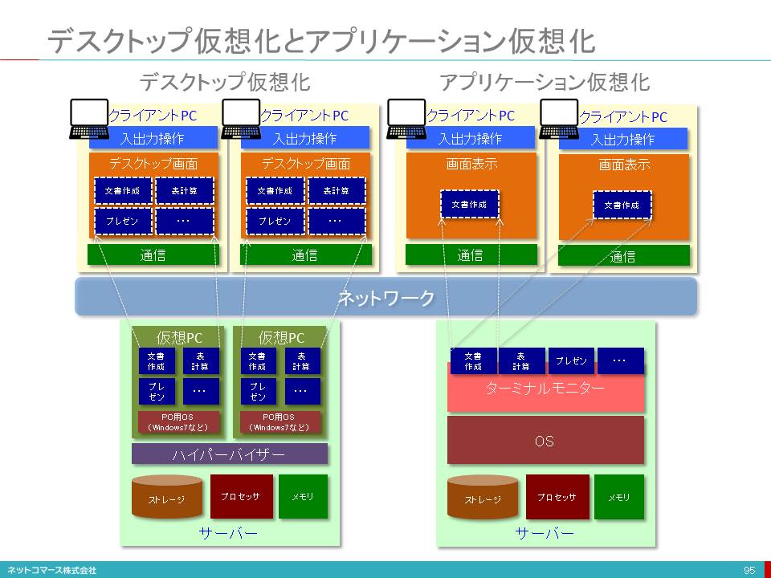
- 【図解】コレ１枚で分かる「デスクトップの仮想化」と「アプリケーションの仮想化」
- 「デスクトップ仮想化」は、サーバー仮想化と同様の技術で、サーバー上にユーザー個別の「仮想PC」を稼働させ、ネットワークを介して、その「仮想PC」の画面を手元のディスプレイに転送・表示させ、キーボード、マウスなどの入出力装置を利用させる技術です。「VDI（Virtual Desktop Infrastructure）」とも呼ばれています。ちなみに「デスクトップ」とは、PC画面のことです。
- 例えば、仮想PCで、普通のPCと同様にWindowsを動かし、WordやExcelを使い、作成した文書や表は、自分の仮想PCに割り当てられたストレージに保存します。ユーザーは、手元にあるPCのディスプレイ、キーボード、マウスを操作しますが、実際に使うプロセッサーやストレージは、サーバーのものです。
- 一方、「アプリケーション仮想化」は、PCの全機能ではなく、特定のアプリケーションだけをサーバーで動かし、ネットワーク越しに複数ユーザーで共用する技術です。さらに、ネットワークがつながっていないときでも操作を継続できるようにしたソフトウェアも登場しています。
- 例えば、MicrosoftのIE（Internet Explorer）6でなければ動かないアプリケーションがあり、同時に最新IEも利用したいとき、IE6を「アプリケーション仮想化」で使用し、PCでは最新IEを動かせば対処できます。また、コンプライアンス上データやアプリケーションを持ち出せないアプリケーションの場合に、自社のデータセンターに設置されているサーバーでこれを動かし、その操作を外部から行うといった使い方もできます。
- どちらも管理されたデータセンターに設置されたサーバーで動かすため、データの持ち出しは困難です。また、盗難や置き忘れで手持ちのPCがなくなってしまっても、管理者が、そのPCから仮想PCへのアクセスを遮断してしまえば使えなくなります。さらに、忘れがちなバックアップやセキュリティ対策など、運用管理者が、サーバーに対して一括でできることから、安全安心の担保、運用管理負担の軽減にも役立ちます。
- また、自宅で仕事をする場合、自宅のPCからネットワークを介して会社で使っている仮想PCのデスクトップを呼び出せば同じ環境をそのまま使えます。これは、災害や事故でPCが破損してしまっても使えることから、事業継続の観点からも注目されています。
- シンクライアント
- 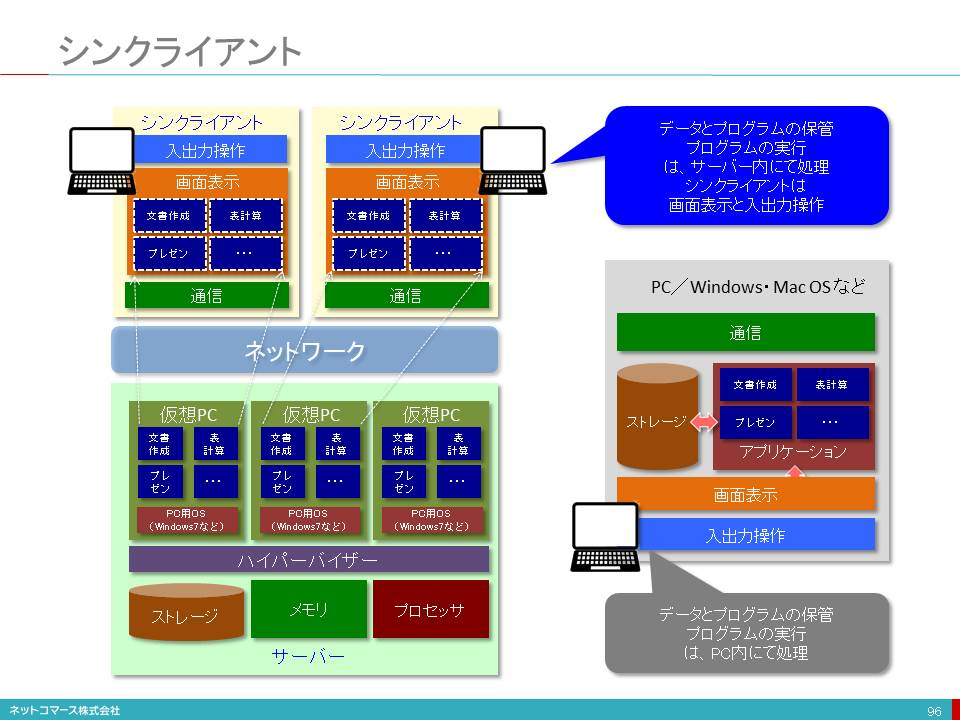
- 「デスクトップ仮想化」と「アプリケーション仮装化」は、手元のPC側にOSやアプリケーションを導入する必要はありません。ならば、ネットワークに接続でき、画面表示や入出力操作の機能を動かすことができるだけの必要最小限のメモリやプロセッサでも十分です。また、プログラムや作成した文書や表などのデータをPC側に保管する必要がないので、ストレージも不要です。
- そこで、「デスクトップ仮想化」と「アプリケーション仮装化」の使用を前提に機能を最小限に絞ったクライアントPCが作られました。これをシンクライアント（Thin Client）と言います。Thinとは、「やせた」という意味です。ちなみに、通常のPCを、Fat（太った）Clientと呼ぶことがあります。
- 最近では、タブレットやスマートフォンのアプリで、シンクライアントの機能を実現しているものも登場しています。
- シンクライアントは、高い処理能力や大容量のストレージを搭載した一般のPCに比べて大幅に安価です。また、ユーザー個別の設定やアプリケーション、データはサーバー側で管理していますので、仮に機械が故障しても、復旧作業を行わず取り替えるだけで使用を再開できるのでユーザーの管理負担は少なくてすみます。
- また、シンクライアントにはデータは保管できませんから、サーバーに接続する手順が分からなければ、盗難に遭ってもデータが盗まれる危険はありません。セキュリティの観点からも安心です。
- 「シンクライアント」は、このような機能を絞り込んだPCの名称として使われていますが、「シンクライアントが利用できる仮想化方式」すなわち、「デスクトップ仮想化」と「アプリケーション仮装化」の総称としても使われる場合があります。
- Chromebook
- 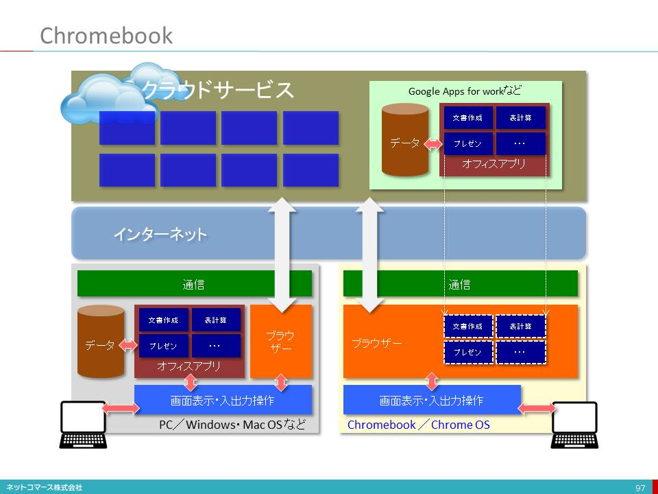
- 【図解】コレ１枚で分かるChromebook
- 今、Chromebookという新しいタイプのノートPCが、注目されています。米Gartner は、2015年、全世界の Chromebook の販売台数は、730万台に達し、PCやタブレットが、二桁を超えて大幅な減少している中、2014年に比べ27%の成長になると予測しています。
- Chromebookとは、Googleが開発したChromeブラウザを動かすことに特化した基本ソフトChrome OSを搭載したノートPCのことです。
- ブラウザしか動かないというシンプルな機能に特化することで、高速なCPUや大量のメモリが不要となりました。また、アプリをPCにインストールせず、ブラウザを介して、クラウド・サービスとして利用するため、プログラムやデータをPCに保管する必要はなく、大容量のストレージもいりません。同時にデータ流出の危険も減り、バックアップも不要です。さらに、機能がシンプルなために、脆弱性が少なくウイルスに狙われる危険も減り安全性も高まります。また、ユーザーが使えるアプリケーションの選択やデータの範囲などの権限設定も管理者が、一括して管理画面から行うことができるなど、PCを個別に配布することに比べ、運用管理負担を大幅に削減することができます。
- これまで「何でもできる」ことを追求し開発されてきたWindowsなどの汎用OSには、快適に動かすためには高性能なハードウェアが必要でしたが、あえて機能を絞り込むことによって、軽量で安価なノートPCを実現したのです。
- かつて、メール、表計算や文書作成などは、PCに導入されたアプリに頼っていましたが、今ではブラウザを介してクラウドで利用できるようになっています。その他の業務アプリケーションもクラウドで利用できるものが増えています。
- 多くのPCユーザーを抱える企業や教育機関は、セキュリティ上の心配が少なく、運用管理側の負担も少ないChromebookに注目しています。まだPCでなければできないことや使い勝手で、従来型のノートPCが必要だとの声も少なくはありませんが、ネットワーク環境やクラウド・サービスの充実とともに、新たな選択肢としてその地位を確立してゆくことになるでしょう。
- クライアント仮想化
- 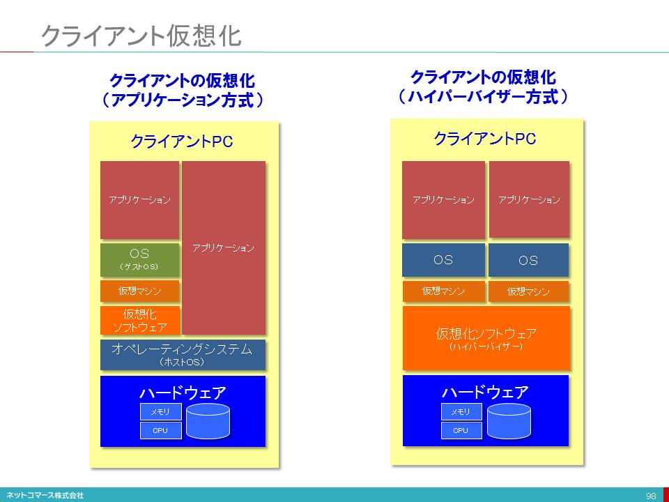
- クライアントの仮想化は、ひとつのクライアントPC上に複数の異なるオペレーティング・システムを同時に稼働させる技術です。
- 本来、ひとりのユーザーに占有使用されるクライアントPCに、複数の仮想マシンを動かし異なるオペレーティング・システムを稼働させるのは、プログラムやデータの互換性を確保するためです。
- 例えば、Window 7と言われるPC用のオペレーティング・システム上で、「XPモード」と呼ばれる仮想化の機能が動きます。この機能はWindows 7の前のバージョンであるWindows XPを動かすことができる仮想PCをWindows7の中に作ります。この上で、Windows XPを動かせば、一台のPCの上で、同時にWindows 7とWindows XPを同時に稼働させることができます。
- このようなことが必要になるのは、Windows XPでは動くがWindows 7では動かないソフトウェアがあるからです。バージョンアップのためにこれを移行するとなると、プログラムの修正やテスト、購入したパッケージ・ソフトウェアであれば、バージョンアップしなければなりません。そのための作業の手間や費用は、台数が多ければ多いほど、大きな負担となります。しかし、この機能を使えば、XP用として開発、購入したソフトウェアを無駄にしないですむのです。
- また、AppleのMac OS上でWindowsを動かすクライアント仮想化のソフトウェアもあります。これを使えば、一台のMac PCでMac OSとWindowsを同時に動かすことができます。そのため、それぞれでしか動かないが、どちらも使いたいと言ったときに、ふたつのPCを用意する必要はありません。また、データも相互にやりとりできますので、大変便利です。
- ストレージ仮想化
- 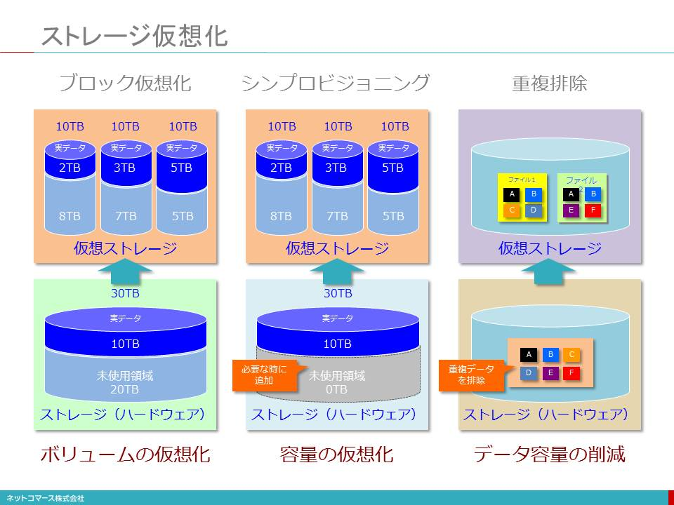
- 【図解】コレ１枚で分かるストレージの仮想化
- ストレージ仮想化は、ハードウェアの物理的な制限・制約からの解放するために使われる技術です。
- 例えば、ストレージの容量は、使っている／いないに関わらず、「128GB」というように物理的に決まってしまいます。これをサーバー個別に割り当て、そこでしか使えないのでは、複数サーバーを使っている場合などは非効率です。そこで、複数ストレージをひとつにまとめ複数サーバーで共用し必要な容量だけを割り当てることで使用効率を高めることができます。
- また、シンプロビジョニングや重複排除という技術で使用効率や利便性をさらに高めることができます。
- シンプロビジョニングは、物理ストレージの容量を実際より多くあるようにサーバー上のアプリケーションに見せかける技術です。これまでなら、物理ストレージの容量が変われば、サーバーやアプリケーションへの設定変更が必要でした。しかし、この技術を使えば、サーバーやアプリケーションには、最初から大きな容量で設定しておき、実際にはその時点で使う容量だけを用意し、足らなくなった容量を物理的に補充するだけで設定の変更が不要になります。これにより容量を節約できると共に運用負担が軽減できます。
- 重複排除は、データの重複している部分を削減し、ストレージの使用効率を高める技術です。例えば、電子メールでファイルを添付して同時に複数の人に送信すると、同じファイルのコピーがいくつも作られてしまいます。この重複データを削除してデータ容量を削減する一方で、ユーザーには、これまでと変わらず複数のファイルがそこにあるように見せかけることができます。このように、ユーザーに意識させずストレージの容量を減らすことができるのです。
- ビッグデータの時代となり、ストレージの需要が高まる中、効率よくストレージを利用し、運用や管理の負担を軽減することへの需要は、益々高まってくるでしょう。
- コンバージド・システムとハイパーコンバージド・システム
- 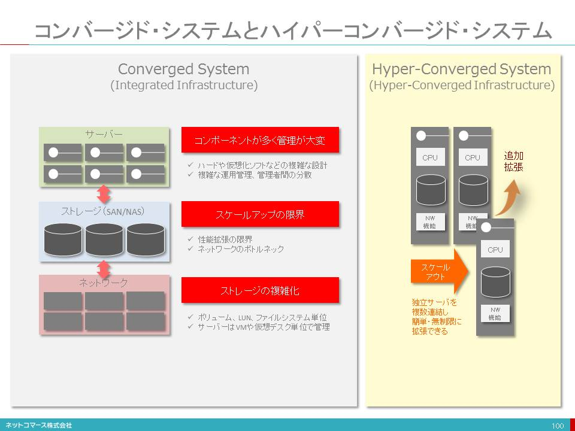
- インターネットに繋げば、いつでも何処でも望む情報が手に入り、アプリケーション・サービスをうけられるようになりました。その結果、必要となるシステム資源は、質的にも量的にも従来とは桁違いの規模となり、これが継続的に増大する状況が生まれています。これを「Webスケール」と呼んでいます。パブリック・クラウドは、このWebスケールに対応しなければなりません。
- そのためには、CPUやメモリ、ストレージなどのハードウェア能力をそれぞれ個別に増強する「スケールアップ」では、すぐに物理的な限界に達してしまいます。そこで、同様のハードウェアを並列に追加してゆき、全体の規模を拡大して、並列処理させることで能力を増強する「スケールアウト」での対応が、一般的です。スケールアウトにすれば、継続的な需要の増大に際しても、ハードウェアを追加してゆくことで、容易に能力を増強できるのです。
- スクリーンショット 2015-06-11 7.42.30.png
- このようなスケールアウトの考え方をパブリック・クラウドではなく、プライベート・クラウドのインフラとして提供しようという製品が登場しています。これらは、「ハイパー・コンバージド・システム」と言われ、Nutanix、EVO:RAIL、Simplivity、VCEのVxRackなどの製品が登場しています。これら製品は、サーバー、ネットワーク、ストレージで1単位の標準化されたモジュールで構成され、これを追加してゆくことで、すなわち、スケールアウトでシステムの能力を増強することができます。
- これまでも、サーバー、ネットワーク、ストレージをひとつの筐体に収め、システムの接続や基本的な設定を予め済ませて出荷する「コンバージド・システム（垂直統合システム）」と言われる製品はありました。例えば、Oracleの Exalogic Elastic Cloud、IBMのPureFlex System、VCEのvBlock、HP のConvergedSystemなどがあります。
- しかし、能力の拡張となると構成要素毎に個別対応しなければならず、しかも、接続や設定などが複雑になります。規模や構成を変えないことを前提に使うには、導入や設定、運用も容易なのですが、スケールアウトには簡単に対応できないものでした。
- 一方、「ハイパー・コンバージド・システム」は、標準化されたモジュールを追加することで、能力をスケールアウトに拡張でき、その構成や設定も自動で行われます。能力の拡張を迅速かつ段階的に行う必要があるインフラ用途として有効です。また構成や設定を全てソフトウェアで行えるSDI（Software Defined Infrastructure）を構築する手段としても注目されています。
- スクリーンショット 2015-06-11 7.42.56.png
- 米Gartnerは、「2015年の戦略的テクノロジ・トレンドのトップ10」にWeb Scale ITとして、これを取り上げ、注目しています。
- SDN（Software Defined Networking）
- 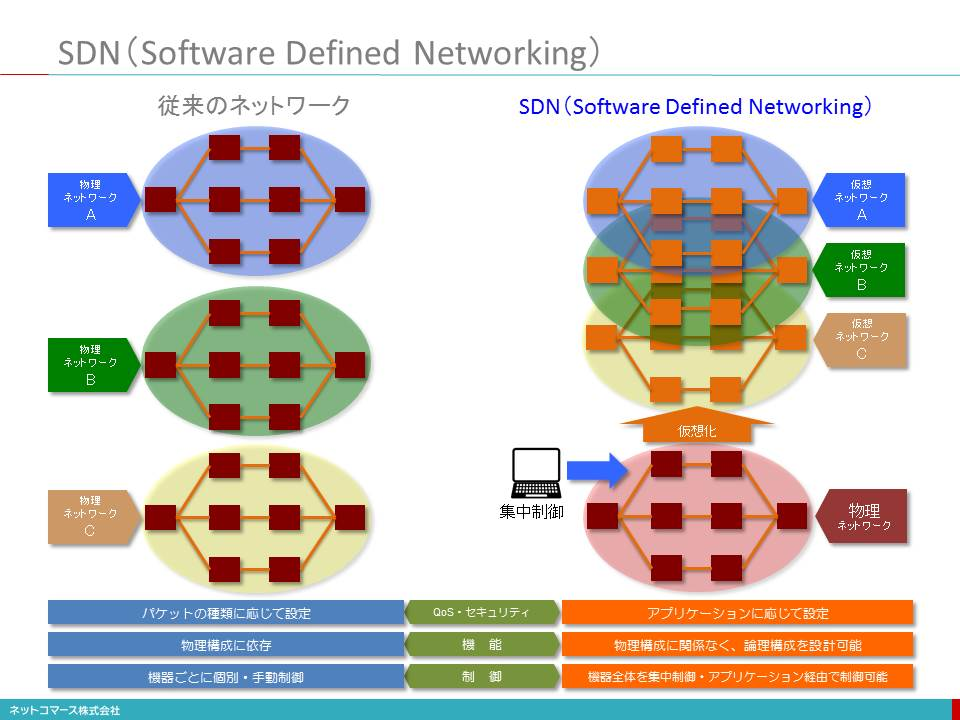
- 【図解】コレ１枚で分かるSDN
- 従来、ネットワークの構築は、異なる役割や機能を持つ多数の機器をケーブルで接続し、それぞれの機器に手間のかかる設定が必要でした。この常識を変えたのが、SDN（Software-Defined Networking）です。
- SDNとは、ルーターやスイッチなどのネットワーク機器の構成や機能、ネットワーク接続ルートなどを、物理的な機器の導入や配線などの作業をしなくても、ソフトウェアへの設定だけで実現する技術の総称です。
- 例えば、異なる複数企業のシステム機器が混在して設置されているデータセンターの場合、従来であれば、独立性を保証するため各社毎に機器もネットワークも物理的に分離して別々に管理しなければなりませんでした。しかし、SDNであれば、全てをひとつの物理的なネットワークでつなぎ、設定だけで分割して個別独立のネットワークに見せかけることができます。また、ルーターやスイッチ、ファイヤーウォールなどの機能や役割の違う物理的な機器が必要でしたが、物理的には同じ機器を使って、設定だけで必要とする機能構成を実現することもできます。このような仕組みをNFV（Network Functions Virtualization：ネットワーク機能の仮想化）と言います。
- また、ネットワーク全体を一元的に集中制御できるので、個々のネットワーク機器の設定に時間を取られません。
- さらに、利用目的に応じた「ポリシー」に応じてネットワークの特性を自由に制御できるようになりました。ポリシーとは、どのように扱うかの方針や制約条件を体系的かつ具体的に定めた規範のことです。
- 例えば、セキュリティを高度に保ちたい、負荷分散を行いたい、音声や映像は途切れないように優先的に処理したいといった、アプリケーションに応じたポリシーを設定し、それに応じてネットワーク全体の挙動を制御できるようになったのです。
- かつては、運用管理者が、アプリケーションのポリシーに応じて、手作業で個々のネットワーク機器の構成や設定を行っていました。しかし、SDNに対応したハードウェアやソフトウェアの登場により、これらの作業をネットワーク全体に対して一括して、あるいは、アプリケーションからの要求に応じて自動的で対応できるようになったのです。
- これにより、ネットワークの運用管理負担が軽減されると共に、アプリケーションの変更に即応できる柔軟なネットワークが実現したのです。
- SD-WAN（Software-Defined Wide Area Network）
- 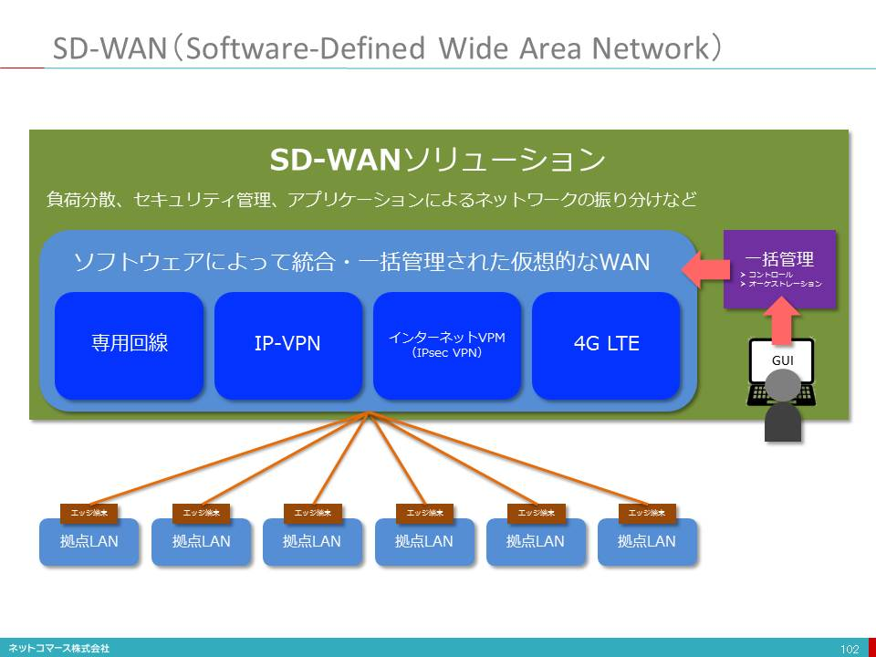
- ブロックチェーン
- 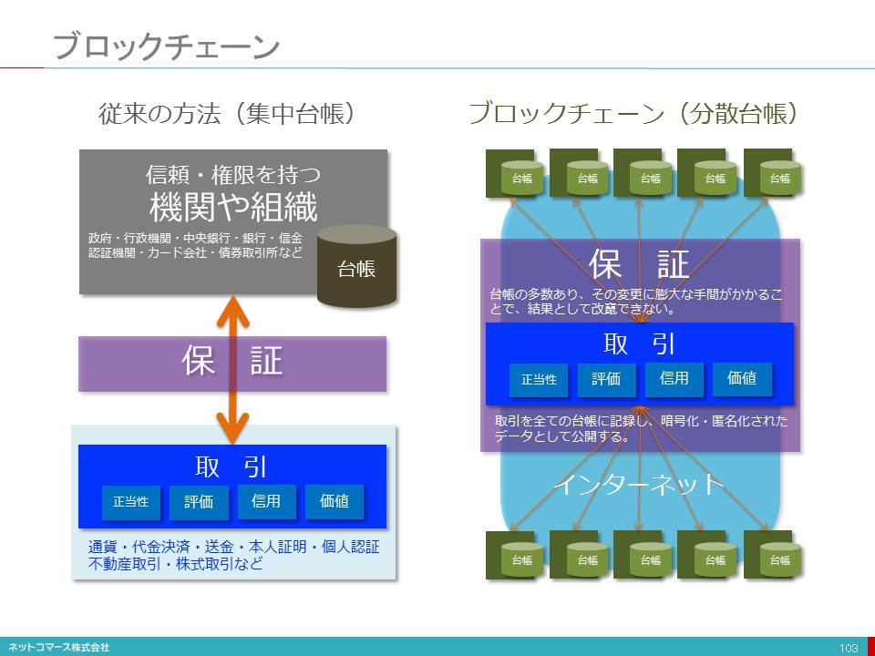
- 【図解】コレ１枚でわかるブロックチェーン
- ブロックチェーン（blockchain）とは、複数のシステムで取引履歴を分散管理する技術のことです。これには暗号技術とP2Pネットワーク（通信ノード間で中継を介さず直接通信する）技術が使われており、第三者機関による証明がなくても取引の正当性を証明でき、データの改ざんを困難にしています。
- ブロックチェーンは、もともと「政府や中央銀行による規制や管理を受けることなく、誰もが自由に取引でき、改ざんなどの不正ができないインターネット上の通貨」として開発されたビットコイン（Bitcoin）の信頼性を担保するための基盤技術として、サトシ・ナカモトと名乗る人物が論文中で初めて原理を示したことが誕生の切っ掛けとなっています。
- この論文に基づいて有志の協力によりオープン・ソース・ソフトウエア（OSS）としてビットコインが開発され、2009年より運用が始まっています。運用が開始されて以降、改ざんなどの被害を受けることなく取引が継続されており、その仕組みの有効性・信頼性については認められつつあります。なお、日本にあったビットコインの取引所Mt.Goxのシステムが2014年に外部からの不正侵害による窃盗行為によるものとして取引が停止され大きな社会問題になりましたが、これはビットコインそのものの問題ではなく、ビットコインの取引を仲介するシステムの問題であり、これによってビットコインそのものの信頼性が侵害されたわけではなく、両者は分けて考えなくてはなりません。
- さて、このビットコインの信頼性を担保する基盤となったブロックチェーンは、「複数のシステムで取引（トランザクション）の履歴を分散共有し監視し合うことで、取引の正当性を担保する仕組み」といえるでしょう。
- 一般的な取引では、法律や規制、あるいは実績によって信頼される第三者機関／組織が取引の正当性を保証し、その取引の履歴を一元的に管理することで、信頼性が担保されていました。
- ブロックチェーンの技術を使うと、
- ブロックチェーンのネットワークに参加する全てのノードに取引が通知され、だれもがその取引の内容を知ることができる。
- 定められたルール（コンセンサス[合意]するための手順）に従って特定のノードが取引のまとまりである「ブロック」を分散共有された台帳に登録することが許され、登録します。ここでいう台帳とは、取引のまとまりである「ブロック」を時間軸に沿ってチェーンのようにつないだもので、これが「ブロックチェーン」と呼ばれる所以です。
- この台帳に取引記録が追加されると（＝ブロックチェーンに新たなブロックが追加されると）、これに参加する全てのノードで新しいブロックチェーンが共有されます。
- この一連の仕組みにより、膨大な複数のノードにより取引の履歴は分散共有され、取引の存在と正当性が特定の第三者に頼らなくても証明されるのです。また改ざんしようとしても、分散共有された膨大な数のブロックチェーンの特定のブロックをほぼ同時に改ざんしなければならず、結果として改ざんが不可能になっているのです。例えば、ビットコインの場合は、膨大な数のノードが四六時中ブロックチェーンの更新を行っており、この全てのノードの51%以上を改ざんしなければ、改ざんは成立しません。これは、強力なスパーコンピューターを駆使しても改ざんができない規模となっており、現実的には改ざんができないようになっているのです。
- また、ブロックチェーンでは取引者の情報は暗号化されているため、取引の内容は公開されても取引者の具体的な情報に紐付けされていないので匿名性は担保されています。
- ブロックチェーンは、ビットコインに代表されるパブリックな取引への適用ばかりではありません。改ざんを困難にする仕組みや、低性能なシステムを分散ノードとして使用し無停止で運用可能なことから、銀行取引や契約などの中核となっている元帳管理に適しているとして、プライベートなシステムでの適用にも注目されるようになってきました。例えば、銀行の預金や為替、決済などの勘定系業務、証券取引、不動産登記、契約管理などへの適用についての検討や研究が進められています。
- 例えば、米株式市場のNASDAQは、「ブロックチェーン」を使った未公開株式取引システム「Nasdaq Linq」を発表、また三菱UFJフィナンシャル・グループ（MUFG）が、ブロックチェーン技術に強みを持つスタートアップ企業米R3が主催し、英バークレイズ銀行、米シティグループなど世界的大手金融機関22行が参画する「Distributed Ledger Group」に参加、さらにIBMがIoTのスケーラビリティとセキュリティを確保する技術「ADEPT（Autonomous Decentralized Peer-to-Peer Telemetry）」にブロックチェーンの技術を適用するなどの取り組みが始まっています。
- このようにブロックチェーン技術は、実用に向けた様々な取り組みが積極的にすすめられており、今後ますます注目されるようになってゆくでしょう。
- 多層防衛
- 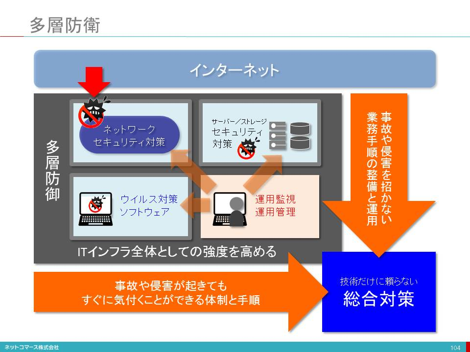
- 【図解】コレ1枚でわかる多層防衛
- ITシステムは、その適用範囲を拡大すると同時にセキュリティ侵害の危険性を高めてしまいました。また、技術の進化は、攻撃の技術をも進化させ、その対策を難しくしています。
- 例えば、PCがウイルスに感染して情報が漏洩してしまうことを想定した場合、ウイルス対策ソフトを導入してPC自体のセキュリティを強化することが行われます。しかし、ウイルス対策ソフトをくぐり抜ける高度な攻撃を受けてしまえば、被害はシステム資源全体に及ぶ危険性もあります。
- このような事態に対処する手段として「多層防御」という考え方が生まれました。
- 多層防御とは、PC自体のセキュリティ対策だけではなく、ネットワークやサーバーなど、PCにウイルスが侵入する経路をも考え、その経路上でも対策を施し、ITシステム全体のセキュリティ強度を向上させようというものです。それは、単に技術的な対策に留まるものではなく、運用方法や操作方法、ビジネス・プロセスや戦略まで含んだ広範な取り組みです。
- 例えば、ウイルス対策ソフトが破られてもネットワークで防ぎ、それが突破されてもサーバーで防ぐといったように、幾重にも防御を施し、システム全体でセキュリティ侵害を防ぐことができます。また、対策を多層にすることで、セキュリティ侵害に手間をかけさせ時間を稼ぐことで、事態を発見しやすくすることも可能になります。
- 技術面の対策としては、IDやバスワードを認証したり、許可された使われ方をしていない端末を遮断したりと言った「認証対策」、ウイルス対策ソフトの導入、セキュリティ更新プログラムの適用、不正なプログラムの起動防止、不正な通信の禁止、盗難・紛失による情報漏洩防止といった「デバイス対策」、暗号化などの「データ対策」が挙げられます。
- もちろん、このような技術的な対策だけでは完璧ではありません。セキュリティを侵害する技術は、日々進化し攻撃力を増しています。また、スマートフォンやタブレットは、ビジネスの現場でこれまでにも増して使われるようになり、BYOD（Bring Your Own Device：個人のデバイスを業務目的で使用すること）も普及し、対策すべきリスクも高まります。
- これに対処するには、技術面に頼るだけではなく、事故や外部からの侵害を招かないための業務手順を整備することや、事故や侵害が起きてもすぐに気付くことがでる体制や手順を整えること、事故や侵害が起きたときの対策を予め準備しておくなどなどの総合的な対策が、重要になります。
- CSIRT（Computer Security Incident Response Team）
- 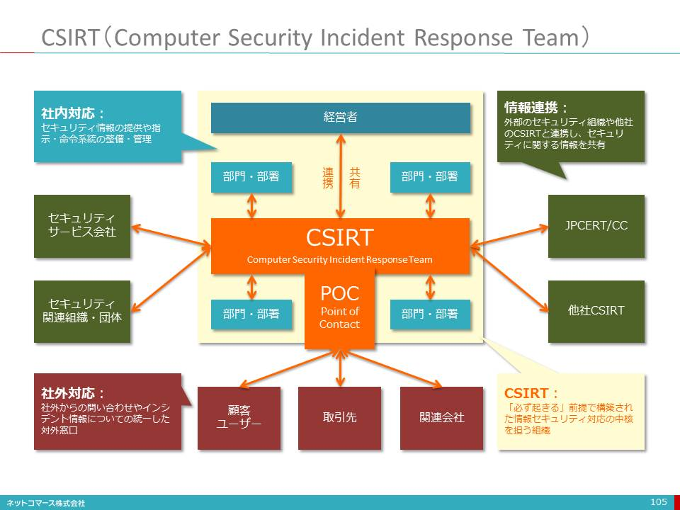
- 【図解】コレ１枚でわかるCSIRT
- 「標的型攻撃」や「リスト型攻撃」などのサイバー攻撃は、巧妙化の度合いを増しています。そのため、どんなに堅牢に防御しても、セキュリティ事故（セキュリティ・インシデント）を完全に防ぐことはできません。
- そこで、「インシデントは必ず起きるもの」という前提で、対応体制を構築し、備えておくことが求められています。このような情報セキュリティ対応の中核を担うのがCSIRT（Computer Security Incident Response Team）です。
- CSIRTは、自社へのサイバー攻撃を検知し、セキュリティ事故が発生すれば直ちに緊急対応します。インシデントに対応する「火消し役」と考えるとわかりやすいかもしれません。主な役割は、次３点です。
- 社内対応：セキュリティ情報の提供や指示・命令系統の整備・管理
- 社外対応：社外からの問い合わせやインシデント情報についての統一した対外窓口（POC : Point of Contact）
- 情報連携：外部のセキュリティ組織や他社のCSIRTと連携し、セキュリティに関する情報を共有
- インシデントに対抗するためには、セキュリティ対策を施したシステムの構築や運用管理、セキュリティに関する啓蒙活動や制度上の整備などが不可欠です。しかし、対策に完全はあり得ません。そのために、インシデントが発生すれば、直ちにそれを検知し対策を講じる体制としてCSIRTが必要になるのです。
- CSIRTは、恒常的な部門として組織されることもあります。しかし、そのための要員やスキルを維持し続けることは容易なことではありません。そこで、必要に応じて招集される組織する場合もあります。前者は、「消防署」であり、後者は「消防団」のような組織に例えるとわかりやすいかもしれません。
- また、社内の要員だけでは、日々高度化、巧妙化するサイバー攻撃に対抗することは困難です。そこで、セキュリティ対策を専門とする企業や、セキュリティ情報を共有、あるいは、支援してくれる外部組織との連携も必要です。
- CSIRTの歴史は古く、インターネット黎明期の1988年、アメリカで甚大な被害を与えたマルウエア「Morris worm」対策のため、情報共有や組織間で連携する必要性が高まり、その連絡調整を担う組織として「CERT/CC（Computer Emergency Response Team / Coordination Center）」という組織が、米カーネギーメロン大学内に設置されました。これが世界で最初のCSIRTと言われています。
- その後、世界各国で同様のCSIRTが作られるようになり、各国のCSIRTをまとめ、他国との情報の収集や共有を行うための世界的な非営利組織FIRST（Forum of Incident Response and Security Teams）が、1990年に設立されました。1996年、我が国でも「JPCERT/CC」という組織が設立され、インシデント情報の共有、対策の研究やガイドラインの作成、取り組みについての啓蒙などが行われています。
- セキュリティ・インシデントは、増え続けています。この現実から逃れる術はありません。この事態に対応するために、企業はCSIRTを設置し、適切に機能させることで、例えインシデントが発生しても被害を最小限に食い止め、再発防止にも貢献することが、求められているのです。